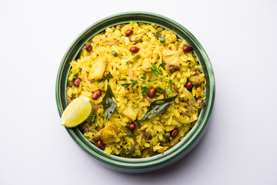

Recipe for Pohe

This is the traditional pohe recipe of maharashtra state in India. Main ingredient of this recipe is the raw pohe which is prepared from rice. That is done in a machine. We are just focusing on cooking side of it
Ingredients-
- Raw pohe - 2 cups washed
- oil - 2 spoons
- masur - 0.5 spoon
- mohri - 0.5 spoon
- chopped onion - 1 number
- chopped mirchis - 1 number
- fried groundnut - around 10 in number
- coriander leaves - 5 leaves
Steps-
- Heat the pan for 2 minutes on low flame.
- Add oil to the pan. Let the oil heat for 1 minute.
- Now add masur and mohri in the oil. Make a high flame until masur and mohri start making popping noise. After that lower the flame
- Now put onion, mirchis, groundnut and coriander leaves in the oil. Make sure flame is low otherwise it might burn the ingredients.
- Now add the washed raw pohe in the pan and mix all ingredient properly.
- After mixing, sprinkle few drops of water on the mix and put lid on the pan.
- Keep lid on for few minutes and after opening you should see vapours coming out. It means your pohe is ready.
Enjoy your pohe